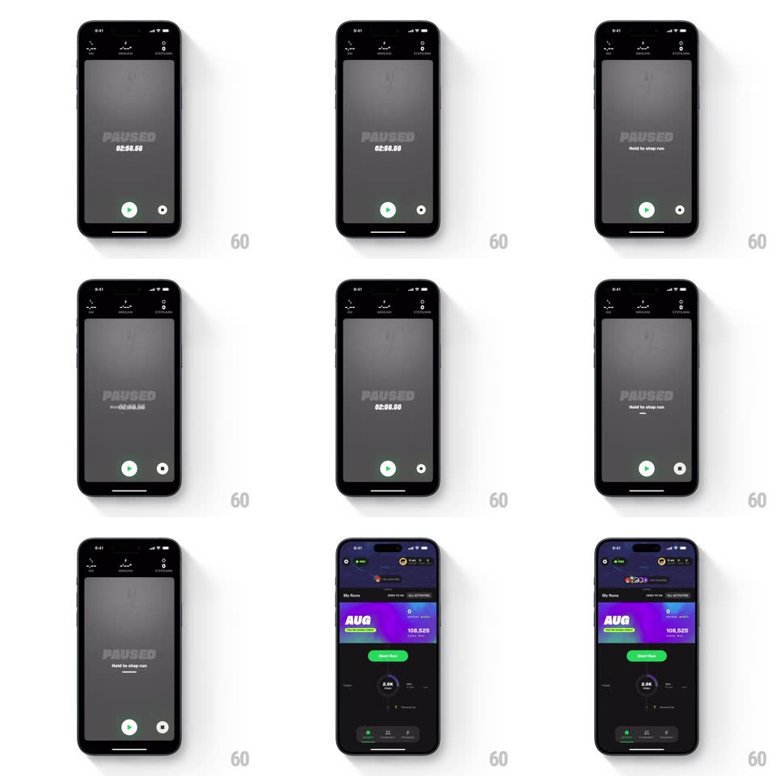

Media
Frame-by-frame

Rebuild this interaction 1:1: Supersonic's hold-to-stop - on the paused run screen ("PAUSED", elapsed time, resume and stop buttons), pressing and holding the stop control fills a progress ring with "Hold to stop run" copy, then transitions to the dark runs dashboard.

Rebuild this interaction 1:1: Supersonic's hold-to-stop - on the paused run screen ("PAUSED", elapsed time, resume and stop buttons), pressing and holding the stop control fills a progress ring with "Hold to stop run" copy, then transitions to the dark runs dashboard.
## Integration
Integration: stack-agnostic spec - springs given as stiffness/damping, timed motions as duration + curve; map every value to your framework and animation library of choice.
## Scene
Dark paused screen: faint "PAUSED" watermark, timer, a green play (resume) button and an outlined stop button at the bottom. Dashboard: "My Runs" header, a purple gradient month card ("AUG", distance, step count "108,525"), a green "Start Run" pill, recent run rows, bottom nav.
## Motion spec
Pattern: hold-to-confirm ring with guarded completion.
- Touch down on stop: the button's ring begins filling clockwise (linear, 1.2s to full) and "Hold to stop run" fades in beneath the timer; the button scales down 0.95 under the finger.
- Release early: the ring drains backward along its own path (250ms, ease-out) and the hint text fades - an abort you can see.
- Ring completes: it flashes solid, the stop icon morphs to a check (180ms), a haptic thud lands, and the whole paused screen slides down and away (350ms ease-in).
- The dashboard rises in beneath it (translateY 24 -> 0 + fade, 300ms), the month card's stats ticking up (steps counting 0 -> 108,525 over 800ms, digit roll) and its gradient slowly shifting hue (8s loop).
- The new run appears in the list with a single row highlight pulse.
## Calibration
- 1.2s hold - long enough to prevent accidents mid-run, short enough to not feel locked out.
- The drain-on-release is the safety affordance made visible.
## Reduced motion
Hold shows a determinate bar; transition is a fade; no counting tick.
## Don't miss
- Resume stays one-tap - only DESTRUCTIVE stop is gated by the hold.
- The ring fills from the button itself - the control and the progress are one object.